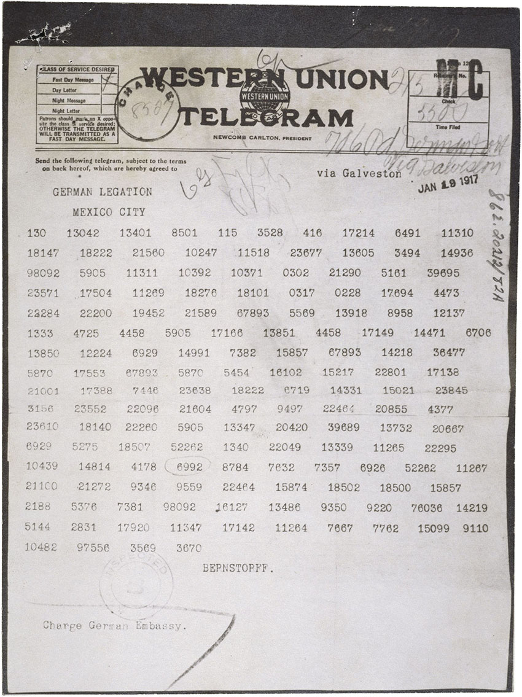
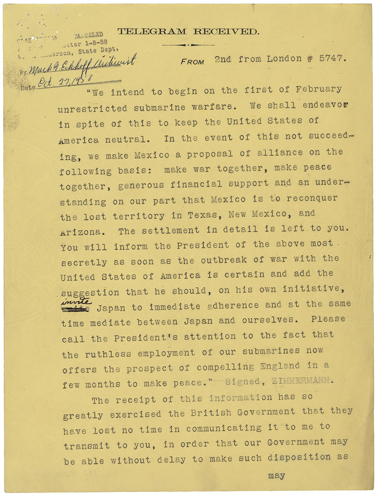

Encryption and decryption were also utilized in WWI and influenced the United States to enter the war. In March 1917, the American public was stunned by news of a German proposal to ally with Mexico in the event of the United States entering World War I. Intercepted by British intelligence,
the Zimmermann Telegram revealed Germany's plan to offer an alliance to Mexico and Japan, aiming to regain lost territories in the southwestern United States. This interception was made possible by British efforts to cut German trans-Atlantic cables and tap into overseas cable lines borrowed from neutral countries.
With the deciphering of German codes, British Intelligence could understand most German messages, leading to the exposure of the Zimmermann Telegram's contents. According to the article, "Zimmerman Telegram", by The National WWI Museum and Memorial,
“The telegram was considered perhaps Britain’s greatest intelligence coup of World War I and, coupled with American outrage over Germany’s resumption of unrestricted submarine warfare, was the tipping point persuading the U.S. to join the war”.
Below is what appears to be an encypted message from the Zimmerman Telegram, along with the decrypted message. These were both found in the National Archives.


Citations:
“National Archives.” National Archives and Records Administration, National Archives and Records Administration, www.archives.gov/. Accessed 12 June 2024.
“Zimmermann Telegram.” National WWI Museum and Memorial, www.theworldwar.org/learn/about-wwi/zimmermann-telegram. Accessed 10 May 2024.